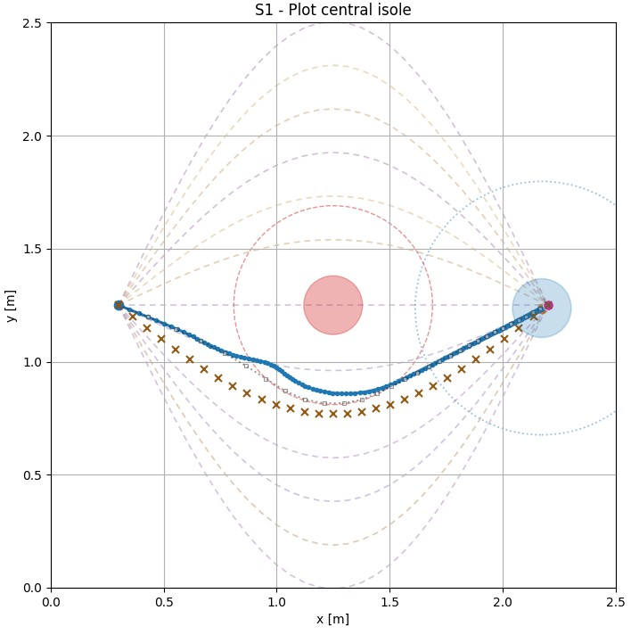
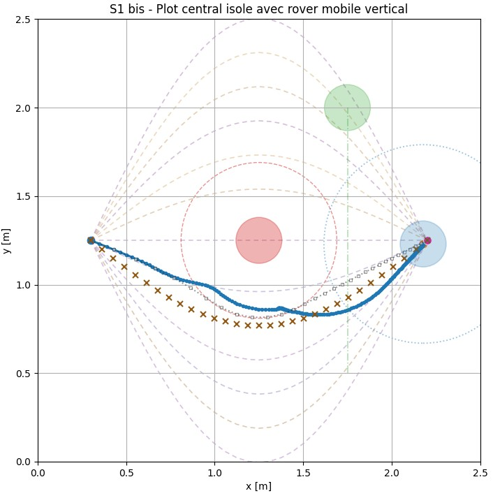
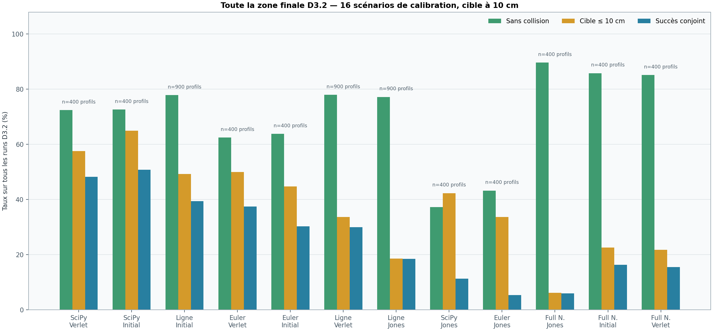
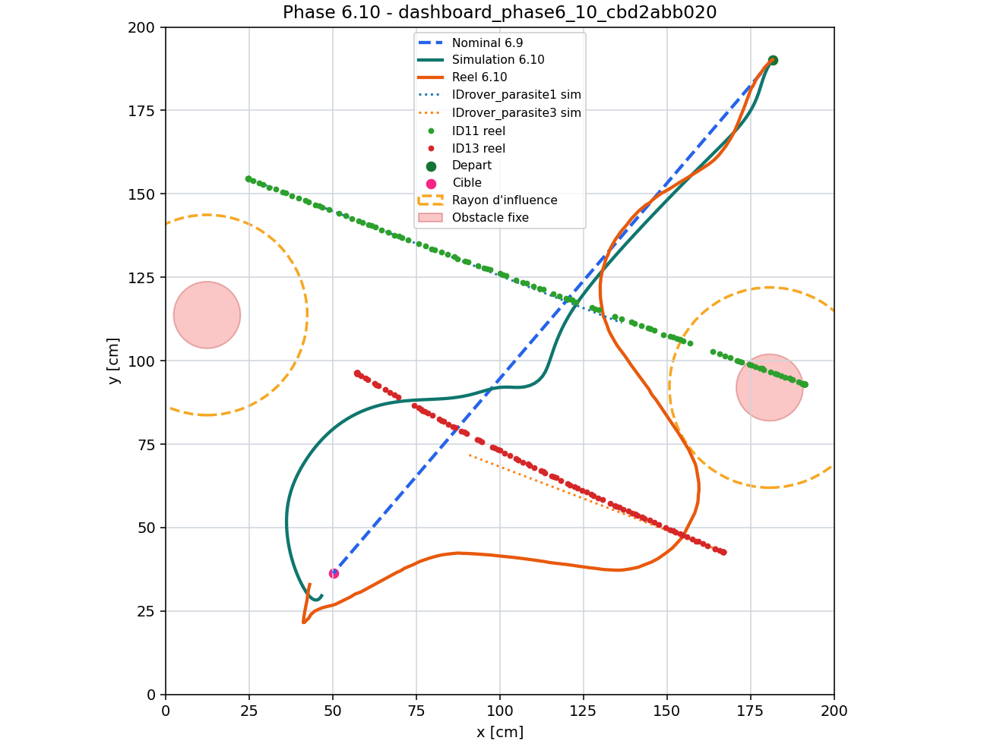
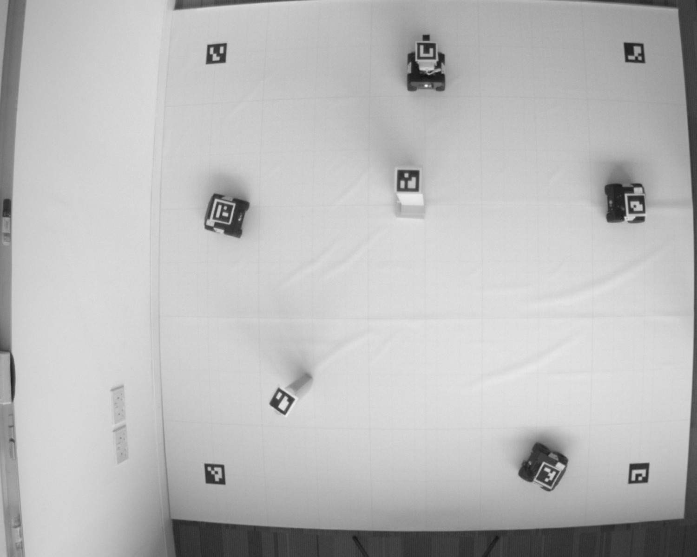
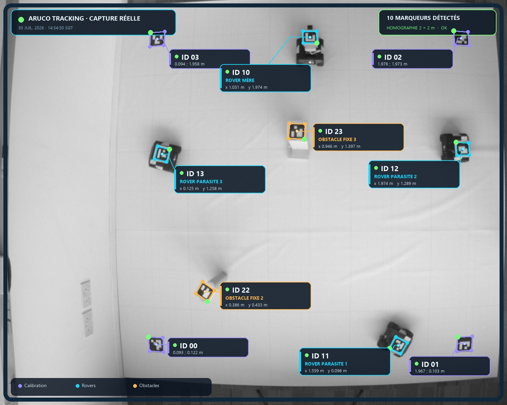
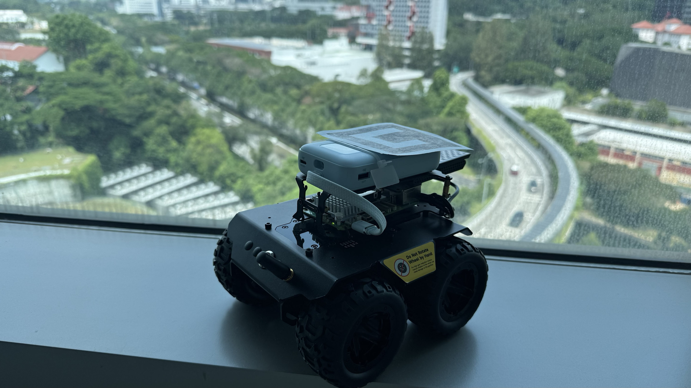
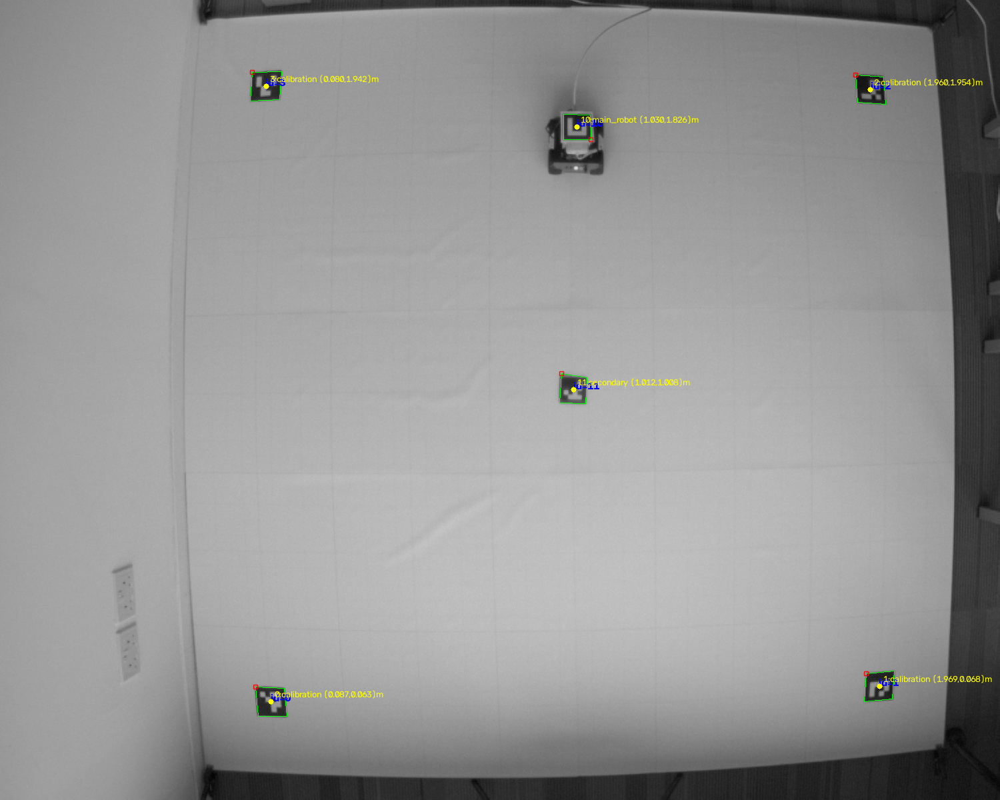

Runs reaching the goal
with moving robots in the arenaAutonomous systems · Research showcase
From the optimized
trajectory to
real motion.
Our system enables the robot to navigate autonomously, identify obstacles in its environment, and correct its trajectory in real time to reach its target.
Arts et Métiers
CNRS@CREATE · Singapore
Mean final error
across those runsTwo-agent runs
two moving robots at onceArUco detection
over 5,688 logged frames01 The challenge
Calculating an optimal trajectory is not enough.
It must adapt in real time and work in the real world.
An autonomous system has to connect a fixed start to a fixed goal while respecting obstacles, boundaries, velocity, acceleration, and imperfect knowledge of moving agents.
The hard part is not producing a curve. It is building a chain that remains coherent from the mathematical objective to the physical experiment.
02 The method
Plan globally.
Respond locally.
The architecture separates what can be optimized in advance from what must be handled causally at runtime.
01
Variational planning · static scene
The nominal phase
Generate candidates, minimize a discretized action, and produce a smooth reference path around known fixed obstacles.

- Input Static environment and target only
- Output Time-parameterized nominal trajectory
- Tools SciPy action minimization or direct Euler–Lagrange residuals
02
Force dynamics · current observation
The causal correction phase
Follow the nominal path while attraction, repulsion, and damping modify the current motion when a mobile agent is observed.

- Input Nominal reference and current mobile state
- Output Trajectory corrected locally at every instant
- Update Semi-implicit Euler, Verlet, or Lennard-Jones variant
Technical layer Open the mathematical core
Variational action
𝒮[x] = ∫0T L(x, x, t) dt
ddt ( ∂L ∂x ) − ∂L∂x = 0
ddt ( ∂L ∂x ) − ∂L∂x = 0
Fixed endpoints turn trajectory generation into a stationarity problem over the path between them.
Compact obstacle potential
Vobs(d) = α(
1d
−
1d0
)²
for d < d0, otherwise 0
for d < d0, otherwise 0
The cost rises inside an influence radius and stays inactive farther away.
Damped force dynamics
mx
+ ξx
= Fgoal + Fobs + Fmobile
Attraction keeps the goal and nominal path relevant; repulsion and damping manage local correction.
2D planar motionfixed start and goalbounded velocitybounded accelerationcurrent-state mobile observation
03 Numerical strategies
Different solvers answer
different questions.
The comparison is an engineering tool, not a single leaderboard. Speed, convergence, trajectory quality, and robustness must be read together.
StrategyWhat it solvesBest useObserved trade-off
SciPy variational
Discretized action minimization with analytic gradient
High-quality nominal planning
Longer campaigns for greater precision
Direct Euler–Lagrange
Stationarity residual through root or least-squares methods
Low-complexity problems
Faster campaigns, but convergence remained scenario-sensitive
Straight-line baseline
No nominal optimization
Ablation and runtime baseline
Ease of computation for a low-quality reference
Full Newton
Fully causal Newtonian dynamics without a nominal trajectory
Nominal-planning ablation baseline
High safety but limited progress toward the target
04 Auto-calibration campaign
Twelve pairs, calibrated
separately, at scale.
Each of the four nominal generators above pairs with three causal controllers. Every pair searches its own seven-coefficient space — never inheriting another pair's gains — then is compared under one criterion: safe and within 10 cm of the goal. A companion report covers the full protocol; this section summarizes its five figures.
Solver × controller pairs
4 nominal generators, 3 causal controllersPlanned runs
across the 12 campaignsFinal-zone runs
6,300 profiles × 16 scenariosCumulative campaign time
if run sequentiallyJoint success · safe and ≤ 10 cm from target
SciPy leads both readings; Full Newton stays safe but rarely arrives.
Across the full final zone, SciPy + Initial leads with 50.84% joint success. Restricted to each pair's top 4 profiles and widened to 10 held-out scenarios, SciPy + Verlet edges ahead at 65.38%. Full Newton — the ablation with no nominal phase at all — reaches up to 96% collision-free runs and as little as 3.85% joint success: it stays safe by stalling short of the goal, not by reaching it.
- 50.84%
- best full-zone joint success · SciPy + Initial
- 65.38%
- best top-4 joint success · SciPy + Verlet
- 3.85%
- Full Newton + Initial/Verlet, despite 96% safety
Choose a figure — the graph updates when clicked

Methodology Open the calibration protocol, full ranking, and limits
Coefficients are searched in three stages — a broad Latin Hypercube sweep, a refined search recentered on the best region, then a tighter final-zone search — over seven parameters: attraction and damping gains, mobile/static/border repulsion, perception radius, and lookahead time. A scenario with a collision-free rate under 15% after Broad is quarantined from scoring but kept running, and is reinstated once it clears 50% then 80%. Nine pairs use the long budget; the three Line-based pairs use very_long, giving Line more sampled profiles in its final zone (900 versus 400).
| Pair | Budget | n zone | Zone: safe / target / joint | Top 4: safe / target / joint | Joint, calib. | Joint, held-out | Duration |
|---|---|---|---|---|---|---|---|
| SciPy + Verlet | long | 400 | 72.44 / 57.61 / 48.30 | 76.92 / 69.23 / 65.38 | 62.50 | 70.00 | 18h 47m |
| SciPy + Initial | long | 400 | 72.62 / 64.94 / 50.84 | 80.77 / 72.12 / 63.46 | 59.38 | 70.00 | 18h 28m |
| Line + Initial | very_long | 900 | 77.89 / 49.30 / 39.38 | 88.46 / 52.88 / 48.08 | 46.88 | 50.00 | 0h 50m |
| Euler–Lagrange + Verlet | long | 400 | 62.50 / 50.00 / 37.50 | 65.38 / 55.77 / 42.31 | 37.50 | 50.00 | 5h 53m |
| Euler–Lagrange + Initial | long | 400 | 63.83 / 44.72 / 30.25 | 68.27 / 41.35 / 31.73 | 23.44 | 45.00 | 5h 33m |
| Line + Verlet | very_long | 900 | 77.95 / 33.69 / 29.95 | 84.62 / 30.77 / 29.81 | 20.31 | 45.00 | 1h 25m |
| Line + Jones | very_long | 900 | 77.19 / 18.65 / 18.51 | 74.04 / 22.12 / 20.19 | 18.75 | 22.50 | 0h 53m |
| SciPy + Jones | long | 400 | 37.23 / 42.33 / 11.30 | 49.04 / 41.35 / 18.27 | 10.94 | 30.00 | 18h 28m |
| Euler–Lagrange + Jones | long | 400 | 43.27 / 33.66 / 5.33 | 53.85 / 37.50 / 16.35 | 6.25 | 32.50 | 5h 30m |
| Full Newton + Jones | long | 400 | 89.69 / 6.19 / 5.97 | 90.38 / 9.62 / 9.62 | 6.25 | 15.00 | 0h 31m |
| Full Newton + Initial | long | 400 | 85.80 / 22.58 / 16.38 | 96.15 / 7.69 / 3.85 | 6.25 | 0.00 | 0h 29m |
| Full Newton + Verlet | long | 400 | 85.14 / 21.83 / 15.56 | 96.15 / 7.69 / 3.85 | 6.25 | 0.00 | 0h 45m |
These percentages are frequencies over a finite set of profiles and scenarios, not probabilities with a confidence interval — each pair is evaluated once, not repeated across independent random seeds. Full Newton's low joint success reflects a progression failure (safe but far from the goal), not primarily a safety failure; Jones controllers trade the opposite way, converting more of their safety margin into unsafe events through a very stiff 1/d¹³ repulsion law.
05 Evidence
What is actually validated?
Every claim is tagged by evidence level. Simulation, software tests, measured motion, and complete physical validation are not interchangeable.
Physical · validated
Moving-agent avoidance
The rover detects moving robots, deviates around them, and still reaches its goal.
Physical · validated
Fixed-obstacle avoidance
Fixed columns avoided in the same runs, with the same causal corrector.
Physical · complete
Metric perception chain
Camera, homography, ArUco tracking, coordinates, and control connected.
Partial · in progress
Predictive digital twin
The twin predicts arrival well, but not yet the full path taken.
Anti-collision campaign · July 30, 2026
The rover now avoids moving robots — and still reaches its target.
Across the final campaign the rover shared its arena with one or two independently moving robots plus fixed columns. It leaves its nominal path to open a gap, then closes back onto the goal. Every run below is a physical run, logged frame by frame.
- 21 / 23
- runs reached the goal with moving agents present
- 7.1 cm
- mean final distance to target (max 7.9)
- 9 / 9
- runs with two simultaneous moving agents
Choose a figure — the graph updates when clicked

Multi-agent simulation · 6 independent agents
Every robot runs its own collision-avoidance brain.
This scenario runs the same causal correction algorithm independently inside all six agents at once, with no central coordinator. The physical runs above validated this logic on one controlled rover among two moving robots; the simulation shows it extends to a fully decentralized swarm where every agent avoids every other.
- 6
- independent agents
- 15 cm
- minimum Newton-phase clearance
- 3 cm
- max final gap to target
Experimental layer Open the validation matrix and metric scope
| Capability | Evidence | Status | Scope |
|---|---|---|---|
| Nominal trajectory generation | Software tests + simulation | Validated | 2D scenarios in repository |
| Fixed-obstacle physical avoidance | Phase 6.10 campaign | Validated | Documented arena and profiles |
| Moving-agent physical avoidance | 23 runs, 30 July 2026 | Validated | 1–2 moving robots, 2 × 2 m arena |
| Two simultaneous moving agents | 9 runs, all reached goal | Validated | Same corrector, no retuning |
| Decentralized multi-agent (6 robots) | Simulation | Simulation | Not physically demonstrated |
| Predictive digital twin | 23 paired sim/real runs | Partial | Arrival predicted; path not yet |
| Aerial drone deployment | None | Not claimed | Physical platform is a rover |
Clearance is measured edge-to-edge between the conservative bounding discs used by the controller (rover radius 0.13 m), not between the physical chassis outlines. A small negative value therefore means the two safety discs overlapped, not that the robots touched. On the 12 runs where both the moving-agent and fixed-obstacle clearances stayed strictly positive for the whole run, the smallest measured margin was 3.0 cm and the mean was 25.8 cm.
Of the 23 runs, one ended on a safety stop when a marker was momentarily lost near an agent, and one hit the duration limit — both are the safety layer behaving as designed, not collisions. Percentages describe this single campaign in one arena with one hardware setup; they are not a general reliability figure.
06 Physical system
Pixels become meters.
Meters become motion.
The experimental chain closes the loop between planning, perception, wheel commands, and measured trajectory error.


- 01Basler camera1500 × 1200 monochrome frames
- 02Homographypixel coordinates → arena coordinates
- 03ArUco trackingrover, obstacle, and reference markers
- 04Differential controltrajectory error → wheel commands
- 05Validation logclearance, RMSE, stop, final gap
30 fps
900 / 900 frames captured in 30-second Ethernet tests on both Mac and Raspberry Pi.
07 The experiment, at a glance
A complete visual system,
captured from the arena.
Video, photographs, and simulation renders spanning the perception, control, and hardware chain — from raw camera frames to the rover in the arena.



08 Current boundary
Avoidance is validated.
Prediction is what comes next.
Predictive digital twin
The twin already predicts where the rover stops to within about a centimetre, but not the path it takes to get there. Closing that gap — modelling wheel slip, latency, and contact more faithfully — is the next major step.
Predictive control and learning
The corrector reacts to the present state only. Model predictive control and learning-based policies would let the rover anticipate where a moving agent is heading instead of responding once it is close.
Better nominal planning
The nominal path comes from a local variational solve that depends on its initialization. Graph search such as A* — used to seed or replace that stage — should give a more reliable global route before the causal layer refines it.
Scale and benchmark breadth
Decentralized avoidance is validated physically for two moving agents and in simulation for six. Larger fleets, and a frozen scenario suite for solver comparison, remain to be done.
09 People & context
A research project built
between France and Singapore.
The work began in January under Prof. Francisco Chinesta and continued during a summer internship at CNRS@CREATE in Singapore, with technical supervision from Amine Ammar.
Slimane
AOUANOUK
Trajectory optimization, simulation, physical integration, and validation.
PortfolioMathis
BENCHIKH
Trajectory optimization, simulation, physical integration, and validation.
LinkedInAmine
AMMAR
Technical guidance and internship supervision.
Personal websiteProf. Francisco
CHINESTA
Research direction and original project supervision.
ResearchGateSebastian
RODRIGUEZ ITURRA
Scientific contributions, technical exchanges, and guidance throughout the project, alongside Prof. Francisco Chinesta.
LinkedInJanuary 2026Research initiated
Problem formulation and numerical foundations with Prof. Francisco Chinesta.
Summer 2026Physical integration
Camera, rover control, experimental campaigns, and validation at CNRS@CREATE.
Late August 2026Research showcase
A concise record of the method, evidence, and remaining boundary.